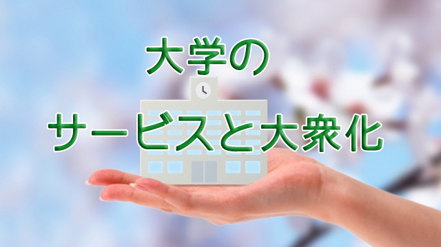

やっと体調も回復し久々にこうして何かを書く元気も出てきた。
先月は入院、そして人生初めての外科手術と患者生活を送ったわけだが、大変だったのは入院そのものよりも退院後なかなか回復しないという現実。やはり歳のせいか…と一時は意気消沈。
それでも桜が満開になる時期に合わせるように体力が戻ってきたのは、春という新しい季節のもたらす生命力のおかげかも知れない。元号も変わったことだし私も新鮮な気持ちで前進していきたい…と殊勝なことを言いつつ入院中には仕事関係など色々な人に多大な迷惑をかけてしまった。衷心よりお詫び申し上げます。
大学の至れり尽くせりのサービス
ところで今は4月。4月といえば入学式や入社式などフレッシュマンの門出を祝う季節であると同時に、新年度の始まりとして何かと慌しい時期ではないだろうか。特に大学生や社会人はアパート探しや、それに伴う引っ越しの準備など大変ではないかと思う。
アパート探しといえば驚いたことがある。またまた個人的な話で恐縮だが、我が家の息子が大学を受験し幸いいくつか受かったのは良いが、いずれの大学からもアパートやマンション、学生寮の案内パンフレットが送られてきたことである。いずれも分厚い豪華版である。
たいていは大学と提携している不動産業者からだが、中には大学自体が子会社（？）として経営している不動産屋からのモノもあった。確かに地方在住者にとっては大学近くの物件を一人で探すより便利であろう。
私にも経験はあるが見ず知らずの街で短期間に物件を探すのは大変な苦労である。現に私は大学進学で北海道から母を伴って上京し、アパート探しに奔走したあげく途中で具合が悪くなり北海道に引き返したことがある。
だから大学がアパート情報を提供するのは学生や親にとって有り難いことだと思う。
しかし、大量の物件紹介のパンフを見て私は何かしらの違和感を感じたのも確かだ。「いつから大学は不動産屋になったんだ（笑）‼」
さらに息子が進学する予定の大学からは生協の案内など続々と書類が送られてくる。大学で使うテキストやら履修届に使うパソコンやら、生協を通して買えばすべて簡単に済むという内容。至れり尽くせりだが何かすべてがベルトコンベアで運ばれて行くような、自動で誘導されているような感覚を感じる。
良く言えば大学は「お客さま」である学生や親の立場に立ってサービスを怠りなく行っているということになる。結構なことである。
昔は大学はこんなに親切ではなかった。「来たければ来い。しかし自分のことは自分でやれ」という対応だった。履修届や時間割、行事などすべては掲示板で素っ気なく表示されるだけで、我々学生は情報を求めて自ら歩き回るしかなかった。
時代は変わった。いまの大学が顧客たる学生や親のニーズを先回りして、きめ細かなサービス提供に努めることは利便性や効率を優先する時代において何の不思議もない。サービスに慣れた現代人にとっては私のような違和感を抱く人は少ないかも知れない。
時代に迎合する教育
ただ、言い古された言葉だが「便利な世の中になったからこそ、それと引きかえに失われるものがある」というのも現実である。
それは何だろうか。何が失われるというのだろう？
それはカンタンに言ってしまえば、自らを頼み自らの頭で考え自らの力で未来を切りひらいていく能力のことである。要するに主体性であり能動的な生き方のことだ。それが失われる。
するとどうなるか。現状に疑問をもたず大勢に流され眼前の損得ばかり考える人間が量産されるだろう。そんな人ばかり増えるとどうなるか。確実に国の命運は尽きる。
そして個々の人生は何の充実も達成も得ず幸福感の薄いものになるだろう。
大げさに聞こえるかも知れないが、教育に携わる者としては「自分の頭で考えない人間」が増えることには強い危機感を覚える。
自ら主体的に考え問題を発見し解決する人間の育成
これは文科省などが提唱する今後教育によって育て上げたい人間像だ。しかしこの文言は私には皮肉な響きに聞こえる。
なぜなら、世の風潮に染まることなく時の権力や価値観にも支配されず、ただ真理を追究するために超然としてあるべき大学が、今やどっぷり資本主義の論理（現在の風潮）に浸っているように見えるからだ。大学が超然とすべきというのはそもそも学問それ自体が、その時代の常識や価値観に逆らいそれを乗り越え新たな真理（常識）を打ち立てる性質をもっているからだ。
何だか大学の「アパート情報提供」の話からエラく飛躍してしまった。
私が言いたかったのは要するに、資本主義の論理（価値観）に染まり切ったいまの大学に主体的人間を育成する教育力があるのだろうかという素朴な疑問を感じるということ。
お客様第一主義を掲げる企業のような姿勢と超然たる学問の府。そのギャップの大きさに戸惑いを覚え違和感を感じるのだ。
歴史と伝統を誇る、いわゆる名門大学さえそうなのだから大学の「大衆化」は想像以上に急速に進んでいる。
こうして見ると、やはり大学に入るまでの教育が大事になってくる。それは受験勉強などでなく、いかに自分自身の頭で考えることができるか。いかに自分の責任で人生を切りひらいていくことができるか。真の主体性ある人間の土台作りの教育である。
次回はその点について考えてみたい。
エンライテックの詳細を見る ＞＞